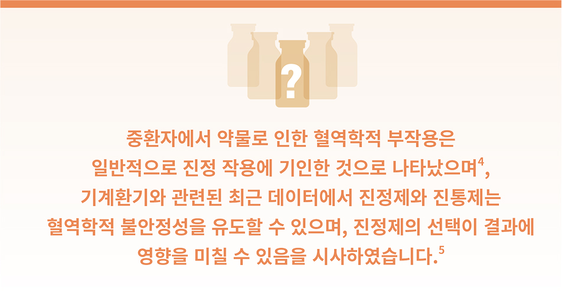
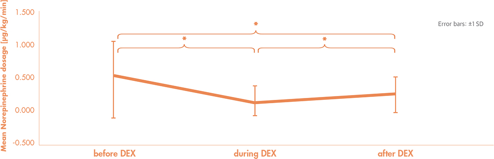
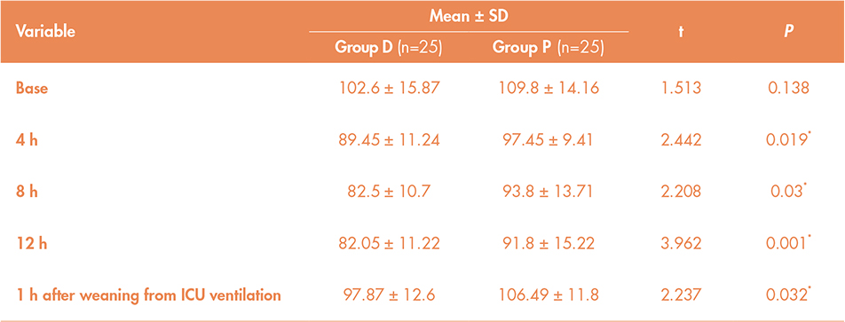

| |
| {{accLname}} {{accFname}} 교수님께 |
| 안녕하세요. 교수님 |
| 한국화이자제약 호스피탈사업부 담당자 {{userName}} 입니다. |
| 환자들의 진료를 위해 항상 고생하시고 애쓰시는 모습에 진심으로 깊은 존경을 표합니다. |
| 프리세덱스팀은 교수님의 진료에 조금이나마 도움이 되고자 중환자의 진정제 선택 시, |
| 혈역학적 안정성을 중요하게 고려해야 하는 이유에 대해 다음과 같이 공유 드리고자 |
| 합니다. |
| 혹시 아래 정보와 관련하여 추가적으로 궁금한 사항이 있으시다면, |
| 언제든 편하게 연락 부탁드리겠습니다. |
| 한국화이자제약 {{userName}} 올림 |
| (TEL: {{User.MobilePhone}} |
| 혈역학적 안정성, |
| 진정제의 선택이 왜 중요할까요? |
|  |
|
| 적절한 평균동맥압 유지를 위해 노르에피네프린 투여가 |
| 필요한 패혈성 쇼크 환자 38명을 대상으로 |
| 프로포폴에서 프리세덱스로 교체 투여 하였을 때, |
| 프리세덱스는 프로포폴과 유사한 |
| 깊은 진정 수준을 유지하였으며, |
| 노르에피네프린 요구량을 유의하게 |
| 감소시켰습니다.6 |
|
|
|
|
|  |
| *p< 0.05 for post hoc multiple comparison. |
Adapted from Morelli A, et al. 2019. |
|
|
Before DEX, propofol+remifentanil sedation; During DEX, dexmedetomidine+remifentanil; After DEX, propofol+remifentanil
|
|
| 심혈관 수술 후 ICU에 입원한 환자 대상, |
| 프리세덱스 투여군은 |
| ICU 입원 4, 8, 12시간 후 및 |
| MV weaning 1시간 후의 심박수가 |
| 프로포폴 투여군 대비 유의하게 낮았습니다.7 |
|
|
| Heart rate measurements at different times between groups |
|
|  |
| *P<0.05 is significant. |
Adapted from Elgebaly AS, et al. 2018. |
|
| Group D, dexmedetomidine; Group P, propofol; SD, Standard deviation; ICU, intensive care unit; h, hour; MV, mechanical ventilation; t, student's t-test |
| References 1. 프리세덱스주 제품설명서. 개정년월일: 2021년 07월 21일. 2. 프리세덱스 프리믹스주 제품설명서. 개정년월일: 2021년 07월 21일. 3. Kamali A, et al. A
Comparison of the Effects of Dexmedetomidine and Propofol in Controlling the Hemodynamic Responses after Intubation: A Double-Blind, Randomized,
Clinical Trial Study. Open Access Maced J Med Sci. 2018 Nov 10;6(11):2045-2050. 4. Buckley MS, et al. Adverse Hemodynamic Events Associated With
Concomitant Dexmedetomidine and Propofol for Sedation in Mechanically Ventilated ICU Patients. J Intensive Care Med. 2020 Dec;35(12):1536-1545. 5.
Buckley MS, et al. Dexmedetomidine for Facilitating Mechanical Ventilation Extubation in Difficult-to-Wean ICU Patients: Systematic Review and Meta-
Analysis of Clinical Trials. J Intensive Care Med. 2020 Jul 6:885066620937673. 6. Morelli A, et al. The Effect of Propofol and Dexmedetomidine Sedation
on Norepinephrine Requirements in Septic Shock Patients: A Crossover Trial. Crit Care Med. 2019 Feb;47(2):e89-e95. 7. Elgebaly AS, et al. Sedation
effects by dexmedetomidine versus propofol in decreasing duration of mechanical ventilation after open heart surgery. Ann Card Anaesth. 2018 Jul-
Sep;21(3):235-242. |
Study design6
The objective of the prospective open-label crossover study was to test the hypothesis that switching from sedation with propofol to the ɑ-2 agonist
dexmedetomidine may decrease norepinephrine doses in septic shock. Thirty-eight septic shock patients requiring norepinephrine to maintain adequate
mean arterial pressure and needing deep sedation with propofol and remifentanil to maintain a Richmond Agitation- Sedation Scale score between –3
and –4. After 60 minutes of hemodynamic and sedation stability (constant propofol-remifentanil and norepinephrine doses) and optimizing intravascular
volume status, an initial set of baseline measurements was obtained (time point: pre-dexmedetomidine). At this time, propofol was replaced by
continuous infusion of dexmedetomidine (starting dose 0.7 μg/kg/hr). Dexmedetomidine dosages were adjusted to maintain the same sedation level as
during propofol-based sedation. After 4 hours of dexmedetomidine infusion, a second dataset was obtained (during dexmedetomidine). Then, sedation
was switched back to propofol, always keeping same sedation level. Primary outcome was the change in norepinephrine doses between periods,
according to the sedation strategy.
|
Study design7
The objective of the study was to compare the suitability (efficacy and safety) of dexmedetomidine versus propofol for patients admitted to the ICU
after the cardiovascular surgery for the postoperative sedation before weaning from mechanical ventilation. A total of 50 patients admitted to the ICU
after cardiovascular surgery, aged from 18 to 55 years and requiring mechanical ventilation on arrival to the ICU were enrolled in a prospective and
comparative study. They were randomly divided into two groups as follows: Group D patients (n = 25) received dexmedetomidine in a maintenance
infusion dose of 0.8 μg/kg/h and Group P patients (n = 25) received propofol in a maintenance infusion dose of 1.5 mg/kg/h. The patients were assessed
for 12 h postoperatively, and dosing of the study drug was adjusted based on sedation assessment performed with the RASS. The patients were required
to be within the RASS target range of -2 to +1 at the time of study drug initiation.
|
프리세덱스주/프리세덱스 프리믹스주 주요 안전성 정보1,2
•프리세덱스는 의사에 의해 투여되어야 하며, 환자가 이 약을 투여받는 동안 지속적으로 감시하여야 합니다. •자극을 받았을 때, 프리세덱스를 투여 받은 일부 환자에서
각성되거나 기민함이 나타날 수 있습니다. •프리세덱스를 24시간 이상 투여하고 갑자기 중지하면, 알파-2-아드레날린 작용제인 클로니딘에서 보고된 바와 같은 유사한
금단증상이 나타날 수 있습니다. •프리세덱스를 투여 받은 318명 대상 의식하 진정에 대한 2개의 임상시험에서, 호흡저하 (호흡이 8번 미만 또는 기저치로부터 25%
초과 감소)는 의식하 진정에서 2% 이상 발생한 이상반응 중 하나였으며, 호흡률 감소 및 저산소증은 이 약과 대조군 사이에 유사하였습니다. 가장 빈번한 이상반응은
저혈압, 서맥 및 구강건조로 나타났습니다. •프리세덱스와 마취제, 진정제, 수면제 및 마약류와의 병용투여 시 효과가 증강되며, 특정 연구에서 세보플루란, 이소플루란,
프로포폴, 알펜타닐 및 미다졸람에 대하여 이러한 효과가 확인되었습니다. 프리세덱스와 이소플루란, 프로포폴, 알펜타닐 및 미다졸람 사이의 약동학적 상호관계는
증명되지 않았으나, 약력학적 상호관계 때문에 이 약과 병용 투여할 때 이 약 또는 마취제, 진정제, 수면제 또는 마약류의 감량이 필요합니다. •집중치료 관리하의 환자를
대상으로 프리세덱스를 24시간 이상 지속 투여한 무작위배정 활성 대조 임상시험에서 시간에 따른 섬망 발생률은 2.0-3.9%로 나타났습니다. •집중치료 관리하의 환자
1,007명을 대상으로 프리세덱스를 24시간 이내로 투여한 임상시험에서 고혈당증은 2% 이상 발생한 이상반응 중 하나였으며, 가장 빈번한 이상반응은 저혈압, 빈맥,
구강건조로 나타났습니다.
|
프리세덱스주 (덱스메데토미딘염산염) 200 mcg/2 mL / 프리세덱스 프리믹스주 (덱스메데토미딘염산염) 80 mcg/20 mL, 200 mcg/50 mL, 400 mcg/100 mL
제품요약정보
[효능·효과] 1. 집중치료 관리하의 진정: 집중치료 관리하에 초기 삽관되어 인공호흡을 실시하는 환자의 진정 2. 수술 및 시술 시 비삽관 환자의 의식하 진정: 1) 감시하
마취 관리 (Monitored Anesthesia Care, MAC) 2) 의식하 광섬유 삽관 (Awake Fiberoptic Intubation. AFI) [용법·용량] 1. 집중치료 관리하의 진정 •개시: 10-
20분간 1 mcg/kg •유지: 0.2-0.7 mcg/kg/hr. 정맥주입 속도는 원하는 진정 수준을 달성하기 위하여 조절 2. 수술 및 시술 시 비삽관 환자의 의식하 진정 •개시: 10분간
1 mcg/kg 안과 수술과 같은 침습성이 적은 수술에서는 10분 동안 0.5 mcg/kg •유지: 0.6 mcg/kg/hr. 원하는 임상효과를 얻기 위해 0.2~1 mcg/kg/hr으로 적정 가능
의식하 광섬유 삽관 환자는 기관 내 튜브가 안전하게 될 때까지 0.7 mcg/kg/hr [경고] 이 약은 의사에 의해 투여되어야 하며 환자가 이 약을 투여 받는 동안 지속적으로
감시하여야 한다. 간장애 환자에서는 이 약의 청소율이 감소되기 때문에 간기능이 손상된 환자에게는 용량을 감량하여야 한다. [금기] 이 약의 성분에 대하여 과민증
또는 과거 과민증의 경험이 있는 환자 [신중투여군] 심혈관 질환 환자. 심장기능이 저하된 환자. 순환혈류랑이 저하된 환자. 간장애 환자. 신장애 환자 [이상반응]
다양한 조건하에서 임상시험이 실시되었기 때문에 이 약의 임상시험에서 관찰된 이상반응 비율은 다른 약물의 임상시험에서의 비율과 직접적으로 비교할 수 없으며,
실제적으로 관찰되는 비율과 다를 수도 있다. [프리세덱스주 개정년월일] 2021.07.21 [프리세덱스 프리믹스주 개정년월일] 2021.07.21
|
| ※제품에 대한 자세한 정보는 최신의 제품설명서를 참고하시기 바라며, 홈페이지(www.pfizer.co.kr)를 통해 확인하실 수 있습니다. |
|
|
|
|
| • |
Information in this e-mail, which is sent to you with your prior consent, contains confidential information of Pfizer and is intended for your exclusive use. Dissemination, distribution, forwarding or copying of this e-mail is prohibited. If you have received this e-mail in error, please notify us immediately by e-mail (koreaemcm@pfizer.com) and completely delete or destroy any and all copies of the original message and any attachments. Thank you for your cooperation.
|
| • |
If you wish to report an adverse event, please contact us at
KOR.AEReporting@pfizer.com |
| • |
If you have a medical inquiry on a Pfizer product, please visit our Medical Information website at https://www.pfizermedinfo.co.kr or call us at +82-80-210-2114. |
| • |
If you no longer wish to receive email from Pfizer, please click here [수신거부]. If you wish to withdraw your privacy consent, please contact us at koreaemcm@pfizer.com. |
|
|
PP-PDX-KOR-0627-14JUN2024
|
|
|
|
|
|